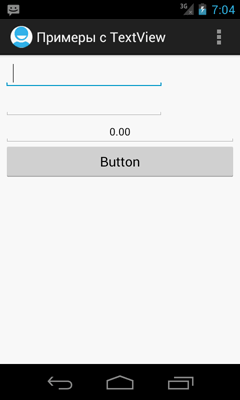
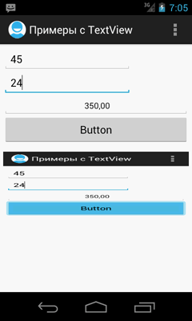
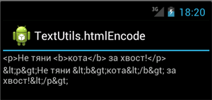
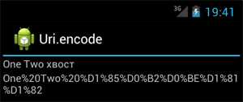

/* Моя кошка замечательно разбирается в программировании. Стоит мне объяснить проблему ей - и все становится ясно. */
John Robbins, Debugging Applications, Microsoft Press, 2000

/* Моя кошка замечательно разбирается в программировании. Стоит мне объяснить проблему ей - и все становится ясно. */
John Robbins, Debugging Applications, Microsoft Press, 2000

Имитация тяжёлых задач
Доступ к ресурсам через URI
Ошибка Debug Certificate expired
Убрать предупреждающие значки при использовании строк в атрибутах
Проверка правильности электронного адреса (Регулярное выражение)
Проверка на первый запуск приложения
Ошибка при загрузке apk-файла на эмулятор/устройство
Сделать скриншот экрана своего приложения
Раскодирование HTML-символов
Кодирование строк по схеме UTF-8
Пишем собственную функцию md5() для вычисления хэша строки
Как сконвертировать строку или CharSequence в int?
Как включить вибрацию?
Определить системную локаль на устройстве
Как заблокировать экран в приложении?
Узнать размеры экрана
В чем разница между fill_parent и match_parent
Как убрать заголовок у Activity?
Как использовать собственный значок для программы
Получить номер версии программы
Убить приложение
Сколько используется памяти
Разрешённый объём памяти для приложения
Как сделать скриншот на эмуляторе
Запретить автоматическую смену ориентации при повороте устройства
Определить момент окончания перезагрузки устройства
Советы для Eclipse
Советы для Android Studio
В Android нельзя выполнять сложные задачи в основном потоке. Для создания быстрой заглушки, которая будет имитировать тяжёлую задачу, можно написать следующий код:
try {
Thread.sleep(15000);
} catch (Exception e) {
}
Например, поместите код в обработчик нажатия кнопки и после нажатия нажмите на кнопку Back. Программа зависнет и вы увидите сообщение об этом.
Обычно мы обращаемся к ресурсам через идентификатор. Существует альтернативный способ через Uri. Например, такой подход может пригодиться для загрузки изображения в WebView при помощи метода loadUrl(). Формат доступа будет следующим: android.resource://[package-name]/res-id. Например:
Uri.parse("android.resource://ru.alexanderklimov.sample/" + R.raw.cat_image);
По умолчанию вашей программе выдается отладочный сертификат на один год. Если у вас есть старый проект, то можете получить сообщение об ошибке: Error generating final archive: Debug Certificate expired.
Вам следует удалить старый сертификат, и Eclipse создаст новый ещё на один год. Путь к сертификату можно посмотреть в настройках: Preferences | Android | Build | Default debug keystore. Обычно это папка C:\Users\ИмяПользователя\.android.
Если в некоторых атрибутах компонентов использовать строки, то появляются предупреждающие значки с всплывающей надписью [I18N] Hardcoded string "Котики рулят", should use @string resource. Надпись призывает использовать строковые ресурсы, а не писать текст прямо в атрибутах. На самом деле это всего лишь предупреждение, а не ошибка. Программа будет прекрасно запускаться, но новичков такие надписи пугают. Можете убрать данное предупреждение, если добавите дополнительный атрибут tools:ignore.
<TextView
... другие атрибуты
android:text="Котики рулят"
tools:ignore="HardcodedText" />
Для проверки первого запуска приложения можно использовать настройки SharedPreferences. Смотрите пример.
Если при загрузке apk-файла вашего приложения на эмулятор или устройство вы получаете сообщение об ошибке:
Failed to upload xxxxxxxx.apk on device 'emulator-5554'
java.io.IOException: Unable to upload file: timeout
То зайдите в Eclipse в меню Window | Preferences | Android | DDMS и в текстовом поле ADB connection time-out (ms) вместо значения по умолчанию 5000 введите большее значение.
Один из примеров снятия скриншота своего экрана - через методы рисования получить графический отпечаток корневой разметки, а затем сохранить его как картинку, которую можно вывести в ImageView. Выберите любой ваш экран для опытов и добавьте на неё кнопку для снятия скриншотов и ImageView для вывода сохранённого изображения. В моём случае корневым элементом была компоновка TableLayout.
TableLayout view;
ImageView view2;
@Override
public void onCreate(Bundle savedInstanceState) {
super.onCreate(savedInstanceState);
setContentView(R.layout.activity_main);
view = (TableLayout) findViewById(R.id.tableLayout);
}
// щелчок кнопки
public void onClick(View v) {
View v1 = view.getRootView();
v1.setDrawingCacheEnabled(true);
Bitmap bm = v1.getDrawingCache();
BitmapDrawable bitmapDrawable = new BitmapDrawable(getResources(), bm);
view2 = (ImageView) findViewById(R.id.imageView1);
view2.setBackgroundDrawable(bitmapDrawable); // для старых версий
//view2.setBackground(bitmapDrawable); // для API 16
}
Результат до и после снятия скриншота. Сам скриншот помещается в ImageView, поэтому растягивается до его размеров. Попробуйте доработать пример.
 
Изменённый пример, когда скриншот сохраняется на SD-карту:
// set your location
private static final String SCREEN_SHOTS_LOCATION = "/media/screenshots";
public static void takeScreenShot(View view, String name) throws Exception {
view.setDrawingCacheEnabled(true);
view.buildDrawingCache();
Bitmap b = view.getDrawingCache();
FileOutputStream fos = null;
try {
File sddir = new File(SCREEN_SHOTS_LOCATION);
if (!sddir.exists()) {
sddir.mkdirs();
}
fos = new FileOutputStream(SCREEN_SHOTS_LOCATION + name + "_"
+ System.currentTimeMillis() + ".jpg");
if (fos != null) {
b.compress(Bitmap.CompressFormat.JPEG, 90, fos);
fos.close();
}
} catch (Exception e) {
}
}
Не забываем про разрешения.
Если вам нужно раскодировать HTML-символы (угловые скобки <>, знак амперсанда &, кавычки ""), то воспользуйтесь методом TextUtils.htmlEncode(). Добавим на форму две текстовые метки. И небольшой код для примера:
setContentView(R.layout.main);
TextView textSrc = (TextView) findViewById(R.id.tvSource);
TextView textResult = (TextView) findViewById(R.id.tvResult);
String src = "<p>Не тяни <b>кота</b> за хвост!</p>";
String result = TextUtils.htmlEncode(src);
textSrc.setText(src); // фраза в html до обработки
textResult.setText(result); // обработанный результат

Примечание: Если вы пользуетесь Notepad++, то там есть такая же возможность: TextFX | TextFX Convert | Encode HTML.
Вероятно, вы не раз замечали, что в адресной строке некоторые символы заменяются на последовательность других символов. Самый простой пример - символ пробела заменяется на %20. Немного изменим предыдущий пример:
String src = "One Two хвост";
String result = Uri.encode(src);
textSrc.setText(src); // фраза в html до обработки
textResult.setText(result); // обработанный результат

В нашем примере были преобразованы символы пробела и русские символы.
У PHP-программистов есть готовая функция md5(), которая вычисляет MD5 хэш строки с использованием алгоритма MD5 RSA Data Security и возвращает этот хэш. Хэш представляет собой 32-значное шестнадцатеричное число. Напишем собственную функцию на Java:
private String md5(String in) {
MessageDigest digest;
try {
digest = MessageDigest.getInstance("MD5");
digest.reset();
digest.update(in.getBytes());
byte[] a = digest.digest();
int len = a.length;
StringBuilder sb = new StringBuilder(len << 1);
for (int i = 0; i < len; i++) {
sb.append(Character.forDigit((a[i] & 0xf0) >> 4, 16));
sb.append(Character.forDigit(a[i] & 0x0f, 16));
}
return sb.toString();
} catch (NoSuchAlgorithmException e) {
e.printStackTrace();
}
return null;
}
Осталось применить её где-нибудь:
public void onClick(View v) {
String mypassword = "cat";
String securepassword = md5(mypassword); // теперь содержит хэш
tvInfo.setText(securepassword); // выводим результат в TextView
}
KeyguardManager keyguardManager = (KeyguardManager) getSystemService(Activity.KEYGUARD_SERVICE);
KeyguardLock lock = keyguardManager.newKeyguardLock(KEYGUARD_SERVICE);
lock.disableKeyguard();
Также нужно установить разрешение android.permission.DISABLE_KEYGUARD.
Если стоит обратная задача - запретить блокировку экрана при долгом бездействии, то используйте метод setKeepScreenOn() или используйте XML-атрибут android:keepScreenOn="true".
Для вычисления размеров экрана можно воспользоваться двумя способами. Второй способ более правильный.
TextView tvResult = (TextView)findViewById(R.id.textView1);
// Узнаем размеры экрана из ресурсов
DisplayMetrics displaymetrics = getResources().getDisplayMetrics();
// узнаем размеры экрана из класса Display
Display display = getWindowManager().getDefaultDisplay();
DisplayMetrics metricsB = new DisplayMetrics();
display.getMetrics(metricsB);
tvResult.setText(
"[Используя ресурсы] \n" +
"Ширина: " + displaymetrics.widthPixels + "\n" +
"Высота: " + displaymetrics.heightPixels + "\n"
+ "\n" +
"[Используя Display] \n" +
"Ширина: " + metricsB.widthPixels + "\n" +
"Высота: " + metricsB.heightPixels + "\n"
);
match_parent = fill_parent. Первое свойство нужно использовать в новых проектах, второе свойство считается устаревшим и пока оставлено в целях совместимости.
В некоторых случаях хочется спрятать заголовок (Title) у программы. Есть несколько способов. Например, применить специальную тему (прописать в манифесте файла):
<activity
android:name=".MainActivity"
android:label="My App"
android:theme="@android:style/Theme.Black.NoTitleBar"
android:screenOrientation="portrait">
Также попробуйте android:theme="@android:style/Theme.Black.NoTitleBar.Fullscreen" (убирает не только заголовок, но и панель уведомлений). Названия тем могут быть и другими, смотрите документацию. Несколько примеров
Если у вас используется своя тема, то используйте в ней параметр:
<item name="android:windowNoTitle">true</item>
Также существует программный способ (перед вызовом setContentView):
// Убираем заголовок
this.requestWindowFeature(Window.FEATURE_NO_TITLE);
// Убираем панель уведомлений
this.getWindow().setFlags(WindowManager.LayoutParams.FLAG_FULLSCREEN, WindowManager.LayoutParams.FLAG_FULLSCREEN);
Когда вы создаете учебные примеры, то у всех программ используется стандартный значок с изображением андроида. Как же использовать свой значок? Ответ прост. В папке проекта /res вы можете видеть подпапки drawable-ldpi, drawable-mdpi, drawable-hdpi и др., в которых и содержатся готовые значки в формате PNG под разные размеры экранов.
Вы можете просто открыть png-файл в графическом редакторе и нарисовать что-то свое и сохранить изменения.
Вы можете сохранить значки под своим именем, например, cat.png. В этом случае вам надо открыть файл манифеста, найти там строчку:
<application android:icon="@drawable/icon" ...
И отредактировать её, например, android:icon="@drawable/cat" (без расширения). Как вариант, вы можете сохранить один значок в папке drawable в нужном размере, если пишете программу под определенные типы телефонов.
Размеры значков в папках:
Также вы можете вызвать мастер создания значков уже после создания проекта (помните, во время создания нового проекта вы выбирали значок?). Для этого выберите в меню File | New | Other... и найдите мастер Android Icon Set. Запустите его и поменяйте значок для программы. Дополнительно вы можете настроить значки для Action Bar и Tab, Notification, Menu.
Смотри пример
Смотри пример
Нужно от общей памяти отнять свободную память
// Get the Java runtime
Runtime runtime = Runtime.getRuntime();
// Run the garbage collector
runtime.gc();
// Calculate the used memory
long memoryUsed = runtime.totalMemory() - runtime.freeMemory();
textView1.setText(String.valueOf(memoryUsed));
Более общий пример:
TextView memInfo = (TextView)findViewById(R.id.meminfo);
String info = "";
info += "Total memory: " + Runtime.getRuntime().totalMemory() + "\n";
info += "Free memory: " + Runtime.getRuntime().freeMemory() + "\n";
info += "Max memory: " + Runtime.getRuntime().maxMemory() + "\n";
memInfo.setText(info);
Система выделяет каждому приложению определённый лимит памяти. На разных устройствах размер выделяемой памяти отличается. Чтобы узнать размер выделяемой памяти для вашего приложения, используйте код:
// Возвращаем лимит памяти в мегабайтах
int memoryClass = ((ActivityManager) getSystemService(Context.ACTIVITY_SERVICE))
.getMemoryClass();
Toast.makeText(this, String.valueOf(memoryClass), Toast.LENGTH_LONG)
.show();
Особенно это касается приложений, которые активно используют графику. Следите за размерами изображений, вызывайте метод recycle() для освобождения памяти при работе с классом BitmapFactory.
Начиная с Android 3.0 можно попросить у системы выделять чуть больше памяти, прописав в манифесте просьбу:
<application
....
largerHeap = "true">
Если вам нужно сделать скриншот вашего приложения в эмуляторе, совсем не обязательно использовать PrintScreen и всякие программы, делающие снимки экрана. В Eclipse откройте меню Window | Show View | Other и в диалоговом окне выберите Devices (категория Android). У вас на экране появится новая панель Devices, на которой есть значок фотоаппарта. Щелкните на нем и получите снимок вашего приложения.
Если вы хотите запретить автоматическую смену ориентацию при повороте устройства, то можно ее отключить для нужного экрана. Например, если экран с настройками должен отображаться только в портретном режиме, то добавьте одну строчку с атрибутом screenOrientation в манифест файла для соответствующей активности
<activity android:name=".MyActivity"
android:label="@string/app_name"
android:screenOrientation="portrait">
смотреть тор 2 , если нравится - ставь лойс.; дешевый отдых в крыму